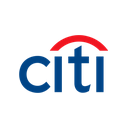

Manfredi Investment
Research & Markets
Equity Research · Informe Institucional
Datos al 3T 2026 (cierre 30 sep 2026, publicado 13 oct 2026)
Datos al 3T 2026 (cierre 30 sep 2026, publicado 13 oct 2026)

CNYSE · Citigroup Inc.Cifras fundamentales: comunicado y suplemento financiero del 3T 2026 (8-K del 13-oct-2026) y 10-Q del 3T 2026 (presentado el 5-nov-2026, con los ratios de capital definitivos y su XBRL). El TTM suma 4T25, 1T26, 2T26 y 3T26. Capital regulatorio con fecha de corte 30-sep-2026; Stress Capital Buffer del CCAR 2026. Precio de mercado: cierre del 6-nov-2026 (Yahoo Finance). Este documento es 100% analítico, no constituye una recomendación de compra, venta ni mantenimiento. Ver disclosure completo al pie.
01 — Resumen Ejecutivo
Citigroup reportó, el 13 de octubre de 2026, ingresos de $23.8 mil millones para el tercer trimestre fiscal de 2026 (+8% interanual, el mejor tercer trimestre de la última década), ingreso neto de intereses de $17.0 mil millones (+14%), ingreso no financiero de $6.9 mil millones (−4%), gastos de $14.0 mil millones (−2% reportado; +3% sin el deterioro de goodwill de $726 millones del 3T25), provisiones de $2.6 mil millones, utilidad neta de $5.2 mil millones (+40%), EPS diluido de $2.85 (+53%), ROE de 10.1% y ROTCE de 11.5%. La eficiencia ratio fue 58.5% (64.7% un año antes) y el apalancamiento operativo (crecimiento de ingresos menos crecimiento de gastos) fue de 10.3 puntos positivos.
La serie trimestral de ROTCE de 2026 quedó en 13.1% (1T), 13.0% (2T) y 11.5% (3T): tres trimestres seguidos por encima de 11%, con un acumulado de nueve meses de 12.6%. En el informe de septiembre este desk había marcado justamente ese dato como la prueba que más podía mover el ancla del modelo, y se cumplió, aunque con una baja contra el 2T. La caída de 150 puntos básicos entre el 2T y el 3T tiene dos explicaciones que la propia compañía detalló: Markets, que venía de un segundo trimestre excepcional, facturó 13% menos que en junio (aunque 6% más que un año antes), y la gerencia adelantó inversiones e indemnizaciones (más de $1 mil millones de indemnizaciones en lo que va del año). Con ese resultado, la gerencia elevó la meta de ROTCE de 2026 a "más de 11%" (desde "10%-11%"), y aclaró que el cuarto trimestre, por estacionalidad de Markets, debería quedar "en un dígito alto".
ROTCE reportado y ajustado. Igual que en el informe de Bank of America de este panel, este informe muestra las dos cifras. En el 3T26 son iguales (11.5%), porque el trimestre no tuvo ítems notables. En los últimos doce meses sí difieren: el 4T25 incluyó la pérdida de $1.1 mil millones después de impuestos por la venta de la operación de Rusia, así que el ROTCE TTM es de 10.7% reportado y de 11.3% sin ese ítem. Las indemnizaciones del año no se tratan como ítem notable (la compañía no las separa), así que quedan dentro de ambas cifras.
La acción cayó 5.6% el día de los resultados (de $131.92 a $124.53) y cerró el 6 de noviembre de 2026 en $119.05: 11.1% por debajo del precio de referencia de septiembre ($133.95), a 1.17 veces su valor contable tangible de $101.59 (1.33 veces en septiembre). El hallazgo de la Sección 13 cambia de signo: en septiembre, el precio pedía un ROTCE sostenido de 12.9%, casi el techo de la guía de mediano plazo de la gerencia (11%-13% para 2027-2028). Ahora pide 11.9%, por debajo del 12.6% que Citi ya hizo en nueve meses y del punto medio de esa guía. El blend ponderado de seis métodos pasa de $132.53 a $133.07, 11.8% por encima del mercado, y la postura pasa de neutral a neutral con sesgo constructivo.
02 — Historia y Evolución
El linaje de Citigroup se remonta a 1812, con la fundación de City Bank of New York (luego National City Bank, luego First National City Bank, renombrado Citibank en 1976). El Citigroup actual nació en 1998 de la fusión entre Citicorp (la matriz de Citibank) y Travelers Group, el conglomerado de seguros y servicios financieros armado por Sandy Weill — en su momento, la mayor fusión de servicios financieros de la historia, y una operación que ayudó a catalizar la derogación, en 1999, de la ley Glass-Steagall (que separaba banca comercial de banca de inversión) vía la Gramm-Leach-Bliley Act. El resultado fue el prototipo del "supermercado financiero" universal: banca de consumo, banca de inversión, seguros y gestión de activos bajo un mismo techo — una estructura que, dos décadas después, la propia Citigroup pasaría años deshaciendo.
La crisis financiera de 2008 estuvo cerca de terminar con el banco: Citigroup recibió aproximadamente $45 mil millones en capital TARP más garantías del gobierno sobre unos $306 mil millones de activos problemáticos —el rescate más grande otorgado a un solo banco durante la crisis—, y su acción llegó a cotizar por debajo de $1 en 2009 (antes del reverse split 1-por-10 de 2011). Para contener la sangría, el banco creó en 2009 "Citi Holdings", una unidad de activos no estratégicos en liquidación que tardó siete años en desarmarse por completo (2016). Vikram Pandit, CEO desde 2007, renunció abruptamente en octubre de 2012 tras un conflicto con el directorio; Michael Corbat lo sucedió y lideró una década de estabilización y control de costos (2012-2021) sin resolver del todo los problemas de infraestructura de control interno del banco: en octubre de 2020, la Reserva Federal y la OCC (Office of the Comptroller of the Currency) impusieron consent orders conjuntos —con una multa de $400 millones— por deficiencias de gestión de riesgo, controles internos y gobierno de datos, el evento que disparó el programa plurianual de "Transformación". El 10-Q del 3T26 lo sigue describiendo como un esfuerzo plurianual "que no ha sido lineal".
Jane Fraser asumió como CEO en febrero de 2021 —la primera mujer en liderar uno de los grandes bancos de Wall Street— con el mandato explícito de simplificar una compañía que el propio mercado llevaba años penalizando con un múltiplo por debajo del valor de libro. Su estrategia tuvo dos frentes: la salida de la banca de consumo en trece mercados internacionales, que al 30-sep-2026 está prácticamente terminada (la venta de AO Citibank en Rusia cerró el 18-feb-2026, con una pérdida de $1.1 mil millones después de impuestos reconocida en el 4T25, y la de la banca de consumo de Polonia cerró en el 2T26), y la salida separada del negocio de banca de consumo en México (Banamex). En septiembre de 2022, Fraser anunció el rediseño organizacional que dio origen a la estructura de cinco segmentos vigente (Sección 03), plenamente implementada en enero de 2024. La venta de Banamex avanzó por etapas: 25% del capital a Fernando Chico Pardo (cerrado en diciembre de 2025), 22.6% a un grupo de inversores institucionales (cerrado en abril de 2026) y un 1.4% final de ese mismo compromiso (cerrado el 11-ago-2026). Citi vendió así 49% y conserva 51% de las acciones con voto. Según el 10-Q, la desconsolidación está prevista para principios de 2027 y la salida a bolsa vendría después, "cuando las condiciones de mercado lo permitan". En octubre de 2025, Fraser sumó la presidencia del directorio, y John Dugan pasó a director independiente principal (Sección 09).
Utilidad neta anual reportada, FY2021–FY2025, y TTM al cierre del trimestre de septiembre 2026 (4T25 a 3T26). El mínimo de 2023 refleja los cargos de reestructuración de la simplificación de Fraser y una pérdida cambiaria por la devaluación del peso argentino; el TTM ($19.3B) ya incluye la pérdida de $1.1B de la venta de Rusia del 4T25. Fuente: 10-K de cada año (XBRL NetIncomeLoss) y suplementos trimestrales de 2026.
03 — Modelo de Negocio y Segmentos
Desde enero de 2024, Citigroup opera bajo cinco segmentos reportables: Services —Treasury and Trade Solutions (TTS) y Securities Services, la "plomería" de pagos transfronterizos y custodia para las mayores corporaciones del mundo—, Markets —la mesa de trading de renta fija, monedas y commodities (FICC) y de renta variable—, Banking —banca de inversión (M&A, mercados de deuda y capital) y crédito corporativo—, Wealth —Citigold y banca minorista, banca privada y Wealth at Work—, y U.S. Consumer Cards (USCC), que desde el 1T26 agrupa las tarjetas de uso general (GPCC) y las de marca de comercio (PLCC), tras transferir la banca minorista a Wealth. Sumando a estos cinco, existe un sexto bloque, All Other (Legacy Franchises, con Banamex y los negocios de consumo internacional en salida, y partidas corporativas no asignadas): un segmento que, por diseño, existe para achicarse hasta desaparecer. Es, de los cuatro bancos money-center de este panel, el único con un segmento entero dedicado a contabilizar el costo de su propia simplificación.
| Segmento | Ingreso 3T26 | % del total | Var. YoY | Utilidad neta 3T26 | ROTCE 3T26 |
|---|---|---|---|---|---|
| Services | $6.61B | 27.7% | +15% | $2.64B | 31.2% |
| Markets | $6.11B | 25.6% | +6% | $1.74B | 12.3% |
| U.S. Consumer Cards (USCC) | $4.66B | 19.6% | 0% | $0.85B | 21.8% |
| Wealth | $3.27B | 13.7% | +15% | $0.59B | 14.3% |
| Banking | $1.74B | 7.3% | +6% | $0.38B | 19.2% |
| All Other (managed basis) | $1.43B | 6.0% | −3% | −$0.96B | — |
| Total firma | $23.85B | 100% | +8% | $5.25B | 11.5% |
Fuente: comunicado de resultados del 3T26 (8-K del 13-oct-2026) y suplemento financiero, págs. 4 y 23. Banking incluye la ganancia/pérdida de coberturas de préstamos (+$9M en el 3T26). All Other en base gerencial (excluye efectos de desinversiones, +$12M de ingresos en el trimestre); la suma de segmentos ($23.83B) más esos $12M reconcilia con el total reportado ($23.845B). El ROTCE de cada segmento usa el capital tangible que le asigna la compañía.
Ingreso por segmento, 3T FY2026. Services y Markets concentran 53% del ingreso de la firma; All Other es el único segmento con pérdida neta.
La lectura más importante de la tabla está en la última columna. Cuatro de los cinco negocios en marcha ya rinden por encima del objetivo de largo plazo de la firma (14%-15%): Services (31.2%), USCC (21.8%), Banking (19.2%) y Wealth (14.3%, contra 7.8% un año antes). El que arrastra el promedio es Markets (12.3%), el segmento con más capital asignado ($56 mil millones de capital tangible promedio, un tercio del total). Y por debajo de todo está All Other: perdió $955 millones en el trimestre, más que el 3T25 (−$756 millones), con $39 mil millones de capital tangible asignado. Es, en esencia, el costo corriente de la simplificación —costos no asignados, la carga de Banamex y lo que queda de las salidas— y la razón por la que el ROTCE consolidado (11.5%) queda bastante por debajo del de los cinco negocios que Citigroup pretende seguir operando. Ningún método de la Sección 13 desagrega la firma por segmento: se valúa el balance consolidado, igual que en el resto del panel.
04 — Desarrollos Recientes y Perspectiva
Services facturó $6.6 mil millones (+15%), con TTS +16% (más depósitos promedio y mejores márgenes de depósito) y Securities Services +13% (activos en custodia +16%, a $35 billones). Markets facturó $6.1 mil millones: +6% interanual pero −13% contra el 2T26, con renta variable +14% (prime brokerage y Asia) y renta fija +4% (Rates plano, FX y spread products en alza). Banking creció 6%, con la colocación de acciones (ECM) +77%. Wealth creció 15% y casi duplicó su utilidad (+93%). USCC quedó plano en ingresos: el NII creció 6%, pero el ingreso no financiero cayó 62% por mayores pagos a socios y costos de recompensas, en parte por la cartera adicional de tarjetas co-branded de American Airlines incorporada en el 2T26.
Ingreso neto de intereses (NII) trimestral, total y sin Markets, 3T25–3T26 (miles de millones de USD). El NII total bajó 1% contra el 2T por Markets; el NII sin Markets, la cifra que guía la gerencia, subió 4% en el trimestre y 7% interanual. Fuente: suplemento financiero del 3T26, pág. 24.
ROTCE trimestral reportado y sin ítems notables, 3T25–3T26. Los ítems notables son el deterioro de goodwill de Banamex del 3T25 y la pérdida por la venta de Rusia del 4T25; los tres trimestres de 2026 no tienen ítems notables, así que las dos líneas coinciden. Todas las cifras son las reportadas por la compañía (suplemento del 3T26, pág. 25).
En la conference call del 13 de octubre, el CFO Gonzalo Luchetti presentó la guía actualizada: ROTCE "por encima de 11%" para 2026 (la meta original era "10%-11%"), crecimiento del NII sin Markets en el rango de "6% medio a alto" (5%-6% a principios de año), eficiencia ratio "por debajo de 60%" y una tasa de pérdida neta de tarjetas en EE.UU. de "alrededor de 4%", el piso del rango que había dado antes. Para el cuarto trimestre anticipó una baja estacional de Markets de ~20% contra el 3T, "o posiblemente algo más", y un ROTCE trimestral de un dígito alto. Para 2027-2028 la gerencia ratificó el objetivo de 11%-13% y, para después, 14%-15%: "no nos movimos ni un centímetro de los compromisos del Investor Day", dijo Luchetti.
El 11 de agosto Citi cerró la venta del 1.4% final del paquete comprometido por inversores, y quedó con 51% de las acciones con voto de Banamex. El paso siguiente es la desconsolidación, que la compañía espera para principios de 2027: cuando Banamex se clasifique como mantenido para la venta, Citi tendrá que pasar por resultados unos $9 mil millones de pérdidas acumuladas por conversión de moneda (CTA), netas de coberturas e impuestos. Es un número grande —~$5.44 por acción, más de la mitad de la utilidad de un año—, pero no es una pérdida económica nueva: esas pérdidas ya están dentro del patrimonio (en "otros resultados integrales") y, por lo tanto, ya están descontadas del valor libro tangible de $101.59 que usa este informe. El 10-Q aclara que el impacto acumulado es neutro para el capital regulatorio y que la desconsolidación, en conjunto, será "levemente positiva" para el CET1. La salida a bolsa quedaría para después de la desconsolidación, sin fecha.
La pérdida neta anualizada de USCC bajó a 3.66% de los préstamos promedio (4.19% en el 2T26 y 4.05% en el 3T25), con tarjetas de uso general en 3.51% y de marca de comercio en 4.19%. La mora de más de 90 días en tarjetas de uso general se mantuvo en 1.21%. El libro corporativo tuvo pérdidas netas de 0.06% de los préstamos promedio, y los préstamos en no-acumulación bajaron 12% interanual. El único frente que empeora es México: la pérdida neta de la banca de consumo de México subió a 6.68% (5.46% un año antes), dentro de All Other.
05 — Estados Financieros
| Métrica | 2T FY26 (jun-26) | 3T FY26 (sep-26) | TTM (a sep-26) |
|---|---|---|---|
| Ingreso neto de intereses (NII) | $17.13B | $16.98B | $65.51B |
| NII sin Markets | $13.12B | $13.71B | $52.68B |
| Margen de interés neto (NIM) | 2.54% | 2.43% | — |
| Ingreso no financiero | $7.64B | $6.86B | $27.60B |
| Ingresos totales | $24.77B | $23.85B | $93.12B |
| Gastos no financieros | $14.22B | $13.95B | $56.32B |
| Eficiencia ratio (más bajo = mejor) | 57.4% | 58.5% | 60.5% (59.7% sin notables) |
| Provisión para pérdidas de crédito | $2.52B | $2.59B | $10.13B |
| Utilidad neta | $5.83B | $5.25B | $19.33B |
| EPS diluido | $3.15 | $2.85 | $10.25 ($10.87 sin notables) |
| ROA | 0.80% | 0.69% | — |
| ROE | 11.4% | 10.1% | — |
| ROTCE reportado | 13.0% | 11.5% | 10.7% |
| ROTCE sin ítems notables | 13.0% | 11.5% | 11.3% |
Fuente: suplemento financiero del 3T26 (págs. 1, 15, 23-25) y XBRL de SEC EDGAR. Nota metodológica: el TTM se armó con el XBRL de la presentación más reciente de cada período: año 2025 del 10-K (presentado el 20-feb-2026) más nueve meses de 2026 menos nueve meses de 2025, ambos del 10-Q del 3T26 (por ejemplo, utilidad neta $14,306M + $16,861M − $11,835M = $19,332M). Coincide con la suma de los cuatro trimestres del suplemento. La API companyfacts de SEC todavía no tiene cargados los períodos de 2026 de Citigroup; las cifras de 2026 se leyeron del XBRL dentro del propio 10-Q. El único ítem notable del TTM es la pérdida por la venta de Rusia del 4T25: $1,173M en ingresos, $1,123M después de impuestos, $0.62 por acción. ROTCE TTM = utilidad disponible para accionistas comunes ($18,052M) / capital tangible promedio de los cuatro trimestres ($169.4B). NIM sobre activos que generan interés promedio, base equivalente gravada (suplemento, pág. 15).
Eficiencia ratio trimestral reportada y sin ítems notables, 3T25–3T26 (más bajo = mejor). La suba de 57.4% a 58.5% en el 3T26 refleja menos ingresos de Markets y el adelanto de indemnizaciones e inversiones; el acumulado de nueve meses (58.0%) queda debajo de la guía de "menos de 60%".
El margen de interés neto bajó de 2.54% a 2.43% entre el 2T y el 3T, pero el NII sin Markets —el que depende del balance de clientes, no de la mesa— creció 4% en el trimestre y 7% interanual, con depósitos promedio +11% y préstamos sin Markets +7%. Los préstamos totales crecieron 12% en el año, con la cartera de Markets (préstamos a clientes institucionales) +36%: el balance que está ganando el banco es en buena parte de Markets, el segmento con menor rentabilidad, y eso es lo que empuja el requerimiento de capital (Sección 06). Este informe usa como base del Método 1 de la Sección 13 el EPS TTM sin ítems notables de $10.87 (el reportado es $10.25).
06 — Balance, Calidad de Activos y Capital Regulatorio
| Métrica (al 30-sep-2026) | Valor |
|---|---|
| Activos totales | $2,941.3B |
| Préstamos totales (EOP) | $819.7B (+12% YoY) |
| de los cuales, corporativos | $401.3B (+20%) |
| de los cuales, tarjetas USCC | $182.0B (+6%) |
| Depósitos totales (EOP) | $1,505.3B (+9% YoY) |
| Deuda de largo plazo (incluye porción corriente) | $345.8B |
| Reserva total para pérdidas de crédito (ACL) | $22.4B (ACL de préstamos 2.48% de préstamos) |
| Préstamos en no-acumulación (nonaccrual) | $3.25B (0.40% de préstamos) |
| Goodwill | $19.07B |
| Intangibles identificables (excl. MSR) | $4.14B |
| Valor libro por acción (BVPS) | $115.61 |
| Valor libro tangible por acción (TBVPS) | $101.59 (+6.1% YoY) |
Fuente: suplemento financiero del 3T26 (págs. 3, 16, 19, 21 y 23) y 10-Q del 3T26 (XBRL: Deposits, LongTermDebt, Goodwill). La deuda de largo plazo es el saldo de XBRL LongTermDebt, que ya incluye la porción que vence dentro de un año: no se le suma ninguna "porción corriente" aparte. En un banco la deuda no se resta del valor del equity (Sección 13), así que la cifra es solo de contexto. TBVPS = patrimonio común ($191.4B) menos goodwill e intangibles identificables, sobre 1,655.2 millones de acciones; cifra no-GAAP de la propia compañía y ancla de valuación de la Sección 13.
En el tercer trimestre la provisión fue de $2.6 mil millones: $2.2 mil millones de pérdidas netas ya realizadas (net credit losses, sin cambios contra un año antes) y $369 millones de net reserve build, es decir, reserva nueva contra pérdidas que todavía no ocurrieron. La propia compañía atribuye ese refuerzo a "cambios en el panorama macroeconómico y crecimiento de cartera", no a un deterioro observado: en USCC el build fue de $208 millones con pérdidas netas en baja (−4% interanual). Las reservas asumen una tasa de desempleo promedio ponderada de 5.3% en los próximos ocho trimestres, con un escenario de estrés cercano a 7%. La reserva de préstamos cubre 6.2 veces los préstamos en no-acumulación (617%), y la reserva de tarjetas equivale a 7.77% de los saldos. Es un banco que sigue reservando por precaución mientras sus pérdidas realizadas bajan; lo opuesto a un ciclo de crédito que se deteriora.
El 10-Q del 3T26 (presentado el 5 de noviembre) confirma un ratio CET1 de 12.77% bajo el enfoque Standardized (el comunicado de octubre había dado 12.8% preliminar), con CET1 de $157.4 mil millones sobre activos ponderados por riesgo (RWA) de $1,232.3 mil millones. Bajo el enfoque Advanced el CET1 es 12.00%. El requerimiento total es 11.6%: mínimo de 4.5%, Stress Capital Buffer de 3.6% (resultado del CCAR 2026; según el 10-Q, queda fijo hasta el 31-dic-2027 por las nuevas reglas de la Fed del 30-sep-2026 que buscan reducir la volatilidad del SCB) y recargo G-SIB de 3.5%. El colchón es de 117 puntos básicos, unos $14.4 mil millones de capital por encima del mínimo. El ratio de apalancamiento suplementario (SLR) es 4.99%, contra un mínimo de 4.0% tras la reforma del eSLR que Citi adoptó en enero de 2026.
El dato nuevo de la conference call es la trayectoria del mínimo: la gerencia asume que el requerimiento sube a 12.1% desde enero de 2028, por el crecimiento del balance y de la actividad (que eleva los indicadores del recargo G-SIB), y ratificó el objetivo orientativo de CET1 de 13.1% presentado en el Investor Day de mayo. Contra el mínimo de 2028, el colchón actual se achica a 67 puntos básicos (~$8.3 mil millones), y llegar a 13.1% exige construir otros 33 puntos. La sensibilidad a tasas juega en ambos sentidos: el balance es sensible a activos, así que una suba paralela de 100 puntos básicos sumaría ~$1.4 mil millones de NII anual, pero restaría ~$3.1 mil millones de patrimonio vía AOCI y ~17 puntos básicos de CET1 (10-Q, riesgo de tasa del banking book).
CET1 al 30-sep-2026 (Standardized, 10-Q) contra el requerimiento actual (mínimo 4.5% + SCB 3.6% + recargo G-SIB 3.5%), el requerimiento que la gerencia asume desde enero de 2028 y el objetivo orientativo del Investor Day. Fuentes: 10-Q del 3T26 y conference call del 13-oct-2026.
07 — Retorno de Capital
| Métrica | Valor |
|---|---|
| Dividendo trimestral (pagado en el 3T26 y declarado para el 4T26) | $0.67/acción (+12% tras el CCAR 2026) |
| Programa de recompra (anunciado el 7-may-2026) | $30.0B multi-año, $23.0B disponibles al 30-sep |
| Capital devuelto — 4T25 | $5.6B ($4.5B recompras + ~$1.1B dividendos) |
| Capital devuelto — 1T26 | $7.4B ($6.3B recompras + $1.1B dividendos) |
| Capital devuelto — 2T26 | $5.0B ($4.0B recompras + ~$1.0B dividendos) |
| Capital devuelto — 3T26 | $4.1B ($3.0B recompras a $133.87 promedio + $1.1B dividendos) |
| Payout total del trimestre / nueve meses (según Citi) | 85% / 104% |
| Payout total TTM (dividendo + recompras / utilidad para accionistas comunes) | 123% (115% sin notables) |
Fuente: 10-Q del 3T26 (recompras de $13.3B en nueve meses, tabla de recompras del trimestre, dividendos comunes de $3,246M en nueve meses, payout de 85% y 104%), 10-K 2025 (recompras de $13.25B en el año) y suplemento financiero. Recompras del 4T25 = $13.25B del año − $8.75B de los nueve meses de 2025. Dividendo común del 4T25 (~$1.09B) estimado con la variación de utilidades retenidas del suplemento ($2,471M de utilidad − $284M de dividendos preferidos − $1,094M de aumento de utilidades retenidas); 1T y 2T26 suman $2,104M. Payout TTM = $22.1B / $18.05B de utilidad disponible para accionistas comunes = 122.6% (115.5% sumando de vuelta los $1,123M del ítem notable del 4T25). La versión de septiembre de este informe calculaba el payout sobre utilidad neta total (135%) y daba un dividendo de $0.60 hasta el 3T26; según el 10-Q, el dividendo de $0.67 ya se pagó en el 3T26.
Citigroup devolvió en los últimos doce meses $22.1 mil millones, 123% de lo que ganó para sus accionistas comunes: sigue siendo el payout más alto de los cuatro bancos money-center de este panel (Bank of America devolvió ~105%). La diferencia con septiembre es la dirección: las recompras bajaron de $6.3 mil millones en el 1T a $4.0 en el 2T y a $3.0 en el 3T, y el payout del trimestre quedó en 85%, el primero por debajo de 100% en el año. La gerencia lo explicó en la conference call: el capital se usa primero para "resiliencia y flexibilidad", después para crecer y recién después para devolver, y con un mínimo que sube a 12.1% en 2028 el ritmo de recompras de la primera mitad del año no se puede repetir. Hay un detalle a favor del accionista: el precio promedio de las recompras del 3T ($133.87, 1.32 veces el TBVPS) es más alto que el precio de mercado de este informe ($119.05). Con la acción a 1.17 veces el valor libro tangible, cada dólar de recompra compra más valor libro, y diluye menos el TBVPS, que cuando la acción estaba a 1.33 veces. El número de acciones cayó 7.5% en un año (de 1,789.3 a 1,655.2 millones).
08 — Comparables de Industria
El grupo de comparables directos de Citigroup son los otros tres bancos universales de escala money-center de EE.UU. — JPMorgan Chase, Bank of America y Wells Fargo —, todos con banca de consumo, banca comercial/de inversión y gestión de patrimonio, y el mismo marco regulatorio de G-SIB. Citigroup es el único de los cuatro que sigue en medio de un proceso activo de simplificación de perímetro.
| Banco | P/TBV | P/E FY27E | ROTCE 3T26 | Eficiencia 3T26 | CET1 |
|---|---|---|---|---|---|
| JPMorgan Chase (JPM) | 2.97x | 13.1x | 20% (21% ex-items) | 54% | 13.9% |
| Wells Fargo (WFC) | 1.89x | 10.5x | 16.3% | 63% | 10.0% |
| Bank of America (BAC) | 1.70x | 9.5x | 12.6% (14.9% ajust.) | 66% (62% ajust.) | 10.9% |
| Citigroup (C) | 1.17x | 9.1x | 11.5% | 58.5% | 12.8% |
Precios de cierre del 6-nov-2026 (Yahoo Finance): C $119.05, JPM $334.49, BAC $49.42, WFC $83.94. TBVPS al 30-sep-2026 de cada comunicado del 3T26 (8-K de 13/14-oct-2026): C $101.59, JPM $112.64, BAC $29.14, WFC $44.46. P/E forward sobre el EPS de consenso de FY2027 (stockanalysis.com): C $13.06 (6-nov-2026); JPM $25.57, BAC $5.19 y WFC $8.01, los mismos que usan los informes actualizados de JPMorgan y Bank of America de este panel (3-nov-2026). Se usa FY2027 porque queda un solo trimestre de 2026. ROTCE, eficiencia y CET1 de cada banco según su comunicado del 3T26; el CET1 de Citi es el definitivo del 10-Q (12.77%), el de los demás, el preliminar de su comunicado.
P/TBV comparado al 6-nov-2026. Citigroup sigue con el descuento más profundo de los cuatro, y la brecha se amplió desde septiembre (1.33x entonces).
El descuento de Citigroup tiene una explicación directa: sigue teniendo el ROTCE más bajo del grupo (11.5% contra 12.6%-21% de sus pares). Pero dos cosas cambiaron contra septiembre. Primero, la distancia de rentabilidad con Bank of America casi desapareció: BAC hizo 12.6% reportado (14.9% sin su multa regulatoria) y cotiza a 1.70 veces su valor libro tangible, 45% más caro que Citi en ese múltiplo. Segundo, Citi tiene el CET1 más alto del grupo después de JPMorgan (12.8% contra 10.0%-10.9% de WFC y BAC) y la eficiencia ratio más baja después de JPMorgan. Sobre utilidades, Citi cotiza a 9.1 veces el EPS de consenso de 2027, el múltiplo más bajo de los cuatro.
09 — Gobierno Corporativo y Estructura Accionaria
Fuentes: 8-K del 22-oct-2026 (elección de James Flanagan), conference call del 3T26, proxy statement 2026, fintel.io, tickergate.com y cobertura de prensa sobre compensación. Ownership y compensación no se volvieron a verificar en vivo para esta actualización.
El único cambio de gobierno del trimestre es una incorporación al directorio: el 21 de octubre de 2026 el directorio eligió como director independiente a James Flanagan, que pasó casi 40 años en PwC (COO y vicepresidente entre 2014 y 2021, antes líder de su práctica de servicios financieros) y se suma al Comité de Auditoría (8-K del 22-oct-2026). Es un perfil de auditoría, riesgo y operaciones, coherente con la etapa del banco: los consent orders de 2020 con la Fed y la OCC siguen vigentes y el 10-Q del 3T26 describe la transformación como un esfuerzo plurianual "que no ha sido lineal". La concentración de los roles de Chair y CEO en Fraser sigue siendo el punto que los asesores de gobernanza suelen señalar: el traspaso ocurrió con la simplificación todavía en curso (Banamex sin desconsolidar, All Other en pérdida), justo cuando más decisiones de ejecución quedan pendientes.
10 — Registro de Riesgos
| Riesgo | Descripción | Severidad |
|---|---|---|
| Tres trimestres no son tres años | El ROTCE de 2026 (13.1%, 13.0%, 11.5%) depende mucho de Markets, que es cíclico, y la propia gerencia anticipa un 4T de un dígito alto. Si el viento de cola de los mercados de capitales se corta, el ROTCE podría volver al rango de 7%-9% de 2024-2025 antes de consolidarse en el nivel de 2026. | Alta |
| El mínimo de capital sube a 12.1% en 2028 | Con un CET1 de 12.77%, el colchón contra el mínimo de 2028 es de 67 puntos básicos, y el objetivo orientativo es 13.1%. El crecimiento del balance de Markets es lo que eleva el recargo; si sigue, el banco tendrá que elegir entre crecer y recomprar. | Media-Alta |
| Banamex: pérdida contable de ~$9B y una salida a bolsa sin fecha | La desconsolidación prevista para principios de 2027 obliga a pasar por resultados ~$9 mil millones de pérdidas por conversión (~$5.44 por acción). La compañía dice que es neutra para el capital regulatorio; el riesgo es de demora, no de capital: All Other perdió $955 millones en el 3T26 y la salida a bolsa depende del mercado y de aprobaciones regulatorias. | Media |
| Consent orders de 2020 aún en remediación | Los consent orders de la Fed y la OCC siguen activos y en julio de 2024 se sumaron multas por avance insuficiente ($135.6 millones de la OCC). El riesgo de nuevas multas o restricciones no está cerrado. | Media |
| Basel III Endgame y revisión del recargo G-SIB | La Fed propuso en marzo de 2026 cambiar el cálculo del recargo G-SIB (bandas de 10 puntos básicos en vez de 50) y sigue pendiente la nueva propuesta de Basilea III. La gerencia dice que tendrá "visibilidad completa" del impacto hacia 2027. | Media (largo plazo) |
| Tasas: más NII, menos capital | El balance es sensible a activos: +100 puntos básicos sumarían ~$1.4B de NII anual pero restarían ~$3.1B de AOCI y ~17 puntos de CET1. En el 3T26 las pérdidas no realizadas de títulos disponibles para la venta ya frenaron el CET1. | Media |
| Crédito en México y tarjetas | Las tarjetas mejoraron (pérdida neta de 3.66%), pero la banca de consumo de México empeora (6.68% vs. 5.46% un año antes), y la cartera adicional de American Airlines todavía no tiene historial completo dentro del banco. | Baja-Media |
| Liquidez | Depósitos de $1.5 billones (+9%), reserva de 2.48% de los préstamos y cobertura de 617% de los préstamos en no-acumulación. No es un riesgo activo. | Baja |
11 — Catalizadores
| Fecha | Evento |
|---|---|
| 13 Oct 2026 | Resultados del 3T FY2026 — ROTCE de 11.5%, tercer trimestre seguido por encima de 11%; meta de 2026 elevada a "más de 11%". Ya ocurrido y desarrollado en este informe. |
| Nov-dic 2026 | Pago del dividendo de $0.67 declarado el 19-oct-2026 y ritmo de recompras del 4T: con $23.0 mil millones disponibles en el programa, es la señal más directa de cómo lee la gerencia el precio de 1.17 veces el TBVPS. |
| Mediados ene 2027 (estimado) | Resultados del 4T y del año 2026 — confirma (o no) el primer año fiscal completo con ROTCE por encima de 11%, el dato que más movería el ancla de ROTCE sostenible de la Sección 13. |
| Principios de 2027 (según el 10-Q) | Desconsolidación de Banamex y reconocimiento en resultados de ~$9 mil millones de pérdidas por conversión. Neutral para el capital regulatorio y el TBVPS según la compañía; la salida a bolsa vendría después. |
| 2027 (sin fecha) | Reglas finales de la Fed sobre el recargo G-SIB y Basilea III; la gerencia espera tener el impacto completo sobre su trayectoria de capital durante 2027. |
| Jun 2027 (estimado) | Próximo stress test de la Fed. Con las reglas del 30-sep-2026, el SCB de 3.6% queda fijo hasta el 31-dic-2027. |
| Ene 2028 | Requerimiento de CET1 que la gerencia asume para Citi: 12.1% (11.6% al 30-sep-2026). |
12 — Modelo Financiero Proyectado y Momentum de Estimados
Antes de construir nuestra propia proyección en la Sección 13, vale la pena mostrar qué proyecta el consenso de Wall Street después del reporte del 3T26.
| Métrica | TTM (a sep-26) | FY2026E | FY2027E |
|---|---|---|---|
| Ingresos | $93.1B (real) | $95.98B (consenso) | $100.18B (consenso) |
| Var. YoY | — | +12.6%1 | +4.4% |
| EPS diluido | $10.25 real ($10.87 sin notables) | $11.40 (consenso) | $13.06 (consenso) |
| Var. YoY EPS | — | +63.1%1 | +14.6% |
Fuente: stockanalysis.com (consenso actualizado al 6-nov-2026; 14 analistas con estimaciones de 2026). 1Contra el año 2025 real del 10-K: ingresos de $85.23B y EPS de $6.99, que incluye ~$0.99 de ítems notables (Banamex y Rusia). El consenso de EPS es ajustado: no incluye la pérdida de ~$9 mil millones (~$5.44 por acción) que Citi reconocerá al desconsolidar Banamex a principios de 2027, así que el EPS GAAP de 2027 va a quedar muy por debajo de $13.06 sin que eso cambie el valor libro tangible. Implícito para el 4T26: ingresos de ~$22.7B y EPS de ~$2.33.
| Métrica | Valor |
|---|---|
| Analistas cubriendo C | 23 (21 en septiembre) |
| Desglose (Strong Buy / Buy / Hold / Sell) | 13 / 5 / 5 / 0 |
| Precio objetivo promedio (12 meses) | $150.60 ($155.20 en septiembre) |
| Mediana / rango de precios objetivo | $150.00 / $127.00 – $170.00 |
Fuente: stockanalysis.com (relevamiento S&P Global, nov-2026, acciones de analistas del 14-oct al 6-nov-2026).
El precio objetivo promedio bajó 3% desde septiembre ($155.20 → $150.60) mientras la acción bajó 11%, así que el upside implícito del consenso pasó de 15.9% a 26.5%, el más alto de los cuatro bancos money-center de este panel. La distribución de calificaciones mejoró (18 de 23 analistas con las dos calificaciones más altas, ninguna negativa) y el precio objetivo más bajo ($127) queda por encima del precio de mercado. Las estimaciones de EPS de 2027 casi no se movieron (de $12.88 a $13.06): el mercado bajó el múltiplo, no la expectativa de utilidades.
13 — Valuación: Métodos y Fair Value
Igual que el resto del panel, Citigroup no se valúa con un DCF de flujo de caja libre a la firma ni con
EV/EBITDA: el balance regulatorio —capital, RWA, depósitos— es la materia prima del negocio, no apalancamiento
externo sobre un negocio operativo separable. Este informe usa el mismo marco que JPMorgan, Bank of America y
Wells Fargo en este panel: un modelo de descuento de dividendos de payout total, un modelo de ingreso residual
anclado en el balance real, el P/TBV justificado por el ROTCE de la propia compañía, comparables directos
(JPM/BAC/WFC), reversión histórica del propio múltiplo y el consenso de Wall Street. No hay WACC: solo un costo
de equity (CAPM). Todos los valores de esta sección salen de un script
(.claude/skills/informe-bancos/modelos/c/valuacion.py), no de cálculos a mano.
Costo de equity (CAPM): Rf 4.86% (Treasury a 10 años, cierre del 6-nov-2026; 5.0% en septiembre) + beta 1.15 (5 años, stockanalysis.com; 1.10 en septiembre) × ERP 5.0% = 10.61%. Costo de equity Base 10.6%; Bear 11.6%; Bull 9.6% (10.5%, 11.5% y 9.5% en septiembre).
Reproducción del modelo de septiembre. Antes de actualizar, el script corrió los supuestos de septiembre (EPS 9.89, TBVPS 100.89, costo de equity 10.5%). La estructura coincide (el porcentaje del valor que viene del terminal es idéntico en los seis escenarios), pero los valores publicados no cierran al centavo: el DDM Base da $133.58 contra $132.61 publicado (+0.7%) y el RIM Base $121.93 contra $122.95 (−0.8%); aquella versión no guardó el script. El blend de septiembre sí se reproduce exacto ($132.53). Esta actualización usa el modelo del script, el mismo de Bank of America.
En septiembre este desk se negó a anclar el caso Base en el ROTCE de 13% del primer semestre: dos trimestres no son los dos o tres años fiscales completos que la metodología exige antes de re-anclar un caso Base en un nivel de rentabilidad nuevo (el criterio que en JPMorgan justificó usar el promedio 2023-2025). El 3T26 suma un tercer trimestre por encima de 11% (11.5%), los nueve meses dan 12.6% y la gerencia ya guía "más de 11%" para el año. Sigue sin ser un régimen de varios años —si se cumple la guía, 2026 va a ser el primer año fiscal completo por encima de 11% desde 2021 (13.4%)—, así que el Base sigue anclado en la guía de la gerencia y no en el pico de 13%. Lo que cambia es dónde dentro de esa guía. El año 1 del RIM pasa de 11.0% a 11.5% (el ROTCE TTM sin ítems notables es 11.3% y el de nueve meses, 12.6%), y el nivel de largo plazo pasa de 12.0% (el piso de la guía 2027-2028) a 12.5% (su punto medio, todavía debajo del 12.6% de 2026 y del objetivo de 14%-15%). El crecimiento del TBVPS se baja de 6%→8% a 6%→7%, porque el banco va a tener que retener más capital para llegar al mínimo de 12.1% de 2028 (Sección 06).
El dividendo de $0.67 por trimestre es una fracción chica de lo que Citigroup devuelve (payout total TTM de 123%, Sección 07), así que se descuenta el payout total. Proyectar el 123% hacia adelante sería un error en la otra dirección: el payout ya bajó a 85% en el 3T26 y el mínimo de capital sube en 2028. Las trayectorias de crecimiento y payout son las mismas de septiembre; cambian la base y el costo de equity. La base es el EPS TTM sin ítems notables de $10.87 (sin la pérdida de $0.62 por acción de Rusia del 4T25), contra $9.89 en septiembre; el EPS reportado es $10.25.
| Supuesto | Bear | Base | Bull |
|---|---|---|---|
| Crecimiento del EPS (año 1 → año 5) | 2% (const.) | 11% → 7% | 16% → 10% |
| Payout total (dividendo + recompras, año 1 → año 5) | 50% → 42% | 100% → 68% | 110% → 80% |
| Costo de equity | 11.6% | 10.6% | 9.6% |
| Crecimiento terminal | 2.5% | 3.5% | 4.0% |
| % del valor desde el terminal | 63% | 69% | 76% |
| Fair value por acción | $52.19 | $144.82 | $245.88 |
El Bear baja el payout casi de inmediato a 50%-42% y congela el crecimiento del EPS en 2%: un escenario de estrés donde el banco prioriza reconstruir capital. El Base parte de un payout de 100% en el año 1 (por debajo del 123% TTM y por encima del 85% del 3T26) y lo lleva a 68% en el año 5, con un crecimiento del EPS de 11% a 7%, por debajo del +14.6% que el consenso espera para 2027 (Sección 12). El Bull sostiene recompras altas más tiempo. El DDM Base sube de $132.61 a $144.82 casi todo por la base de EPS: el TTM de septiembre todavía incluía el 3T25 ($1.86 reportado), y el de ahora ya tiene tres trimestres de 2026.
Partimos del valor libro tangible al 30-sep-2026 ($101.59 por acción) y sumamos el valor presente del "exceso de retorno" de cada año: la diferencia entre el ROTCE y el costo de equity, aplicada sobre el capital tangible del año anterior. Por el chequeo de régimen de arriba, el Base arranca en 11.5% y converge a 12.5%.
| Supuesto | Bear | Base | Bull |
|---|---|---|---|
| ROTCE (año 1 → año 5) | 8.0% → 7.0% | 11.5% → 12.5% | 13.0% → 15.0% |
| Crecimiento del TBVPS (año 1 → año 5) | 3% → 2% | 6% → 7% | 9% → 12% |
| Costo de equity | 11.6% | 10.6% | 9.6% |
| Crecimiento terminal | 2.5% | 3.2% | 3.8% |
| % del valor desde el terminal | −65% | 16% | 43% |
| Fair value por acción | $52.10 | $128.28 | $213.36 |
El Bear asume que el ROTCE vuelve a 7%-8%, el rango de 2024, por debajo del costo de equity en los cinco años: el banco destruiría valor económico de forma sostenida (de ahí el porcentaje negativo del terminal). El Base ($128.28, antes $122.95) sigue siendo el más conservador del panel en términos relativos: no extrapola el 12.6% de 2026, se queda en el punto medio de la guía. El Bull ($213.36) supone que Citi llega al techo de su objetivo de largo plazo (15%) antes de 2028.
| COE \ g terminal | 2.2% | 2.7% | 3.2% | 3.7% | 4.2% |
|---|---|---|---|---|---|
| 8.6% | $170.40 | $175.23 | $180.95 | $187.84 | $196.30 |
| 9.6% | $144.93 | $147.49 | $150.45 | $153.91 | $158.02 |
| 10.6% | $125.62 | $126.86 | $128.28 | $129.89 | $131.76 |
| 11.6% | $110.50 | $110.95 | $111.45 | $112.02 | $112.67 |
| 12.6% | $98.35 | $98.31 | $98.27 | $98.22 | $98.17 |
Grilla propia, recalculando el Residual Income Model del caso Base (mismas trayectorias de ROTCE y crecimiento de TBVPS, TBV0 $101.59) para cada combinación de costo de equity y crecimiento terminal; la celda base (10.6%, 3.2%) reproduce el $128.28 reportado. En la versión de septiembre la grilla se había calibrado escalando los valores para que la celda base diera el número publicado; ahora cada celda sale directo del modelo. Con el precio en $119.05, 15 de las 25 celdas lo superan; las diez de costo de equity de 11.6% o más quedan por debajo.
El ancla de valuación más usada por la industria para bancos: P/TBV justificado = (ROTCE − g) / (Costo de
equity − g), con el mismo ROTCE de largo plazo del Método 2 (el del año 5 de cada escenario) y el mismo
costo de equity y crecimiento terminal.
| Escenario | ROTCE sostenible | P/TBV justificado | Fair value (sobre TBVPS $101.59) |
|---|---|---|---|
| Bear | 7.0% | 0.50x | $50.24 |
| Base | 12.5% | 1.26x | $127.67 |
| Bull | 15.0% | 1.93x | $196.17 |
La lectura inversa es la más útil del informe. Resolviendo la fórmula para el ROTCE que justifica el múltiplo de mercado (1.17x, con el costo de equity y el crecimiento del caso Base), el precio de $119.05 exige un ROTCE sostenido de ~11.9%. En septiembre, con la acción a 1.33x, exigía 12.9%: casi el techo de la guía 2027-2028 (11%-13%). Ahora exige menos que el punto medio de esa guía, menos que el 12.6% de los nueve meses de 2026 y apenas un poco más que el 11.5% del 3T, el peor trimestre del año. Para que el precio actual esté caro, Citi tendría que quedarse en la parte baja de su propio objetivo durante años. Es la misma lectura que llevó a Bank of America a una postura constructiva en este panel: no porque el banco haya mejorado mucho en el trimestre, sino porque la acción cayó hasta pedir solo el piso de lo que la gerencia promete.
Aplicamos el P/TBV y el P/E forward promedio de los tres comparables directos de la Sección 08 al TBVPS y al EPS de consenso de 2027 de Citigroup.
| Enfoque | Múltiplo promedio de peers | Precio implícito |
|---|---|---|
| P/TBV promedio (JPM/BAC/WFC) × TBVPS C ($101.59) | 2.18x | $221.92 |
| P/E FY27E promedio (JPM/BAC/WFC) × EPS FY27E C ($13.06) | 11.03x | $144.02 |
| Comparables (promedio de ambos enfoques) | — | $182.97 |
Los dos enfoques divergen por la misma razón que en septiembre: el promedio de P/TBV está inflado por JPMorgan (2.97x), en un grupo de solo tres bancos. Sin JPMorgan, el P/TBV promedio de BAC y WFC (1.79x) daría $182.05. El P/E sobre 2027 ($144.02) es el enfoque menos sensible a esa distorsión. El resultado promediado ($182.97, antes $188.35) sigue siendo el método más optimista del blend y conviene leerlo con esa sensibilidad en mente. En septiembre el P/E usaba el EPS de 2026; ahora usa el de 2027, igual que los informes actualizados de JPMorgan y Bank of America.
Este método pregunta a qué múltiplo de valor libro tangible cotizó la propia acción de Citigroup, en promedio, sin compararla con otras ni proyectar flujos. Usamos la misma ventana de 3 años (cierres fiscales 2023-2025) que el resto del panel: 0.597x (2023, $51.44 / TBVPS $86.19), 0.788x (2024, $70.39 / $89.34) y 1.202x (2025, $116.69 / $97.06).
| Referencia histórica | Múltiplo P/TBV | Precio implícito (sobre TBVPS $101.59) |
|---|---|---|
| Cierre FY2023 | 0.597x | $60.63 |
| Cierre FY2024 | 0.788x | $80.04 |
| Cierre FY2025 | 1.202x | $122.14 |
| Promedio 3 años (2023-2025) | 0.862x | $87.60 |
| Mediana 10 años (GuruFocus, referencia) | 0.83x | $84.32 |
Precios de cierre del último día hábil de cada año (Yahoo Finance, sin ajustar por dividendos; verificados para esta actualización). TBVPS de cierre tal como lo reportó la compañía en el comunicado del 4T de cada año. Mediana de 10 años de GuruFocus no verificada en vivo, mostrada solo como referencia.
Es el único método que queda por debajo del mercado ($87.60, −26.4%) y el de más peso en el blend (30%). Dos de los tres años que promedia (2023 y 2024) son anteriores a la mejora de rentabilidad de 2026, cuando el banco ganaba un ROTCE de 5%-7% y cotizaba debajo de su valor libro. Si 2026 cierra con un ROTCE por encima de 11%, la ventana de enero de 2027 reemplazará 2023 (0.60x) por 2026, y este método subirá de forma mecánica. Es la misma cautela aplicada dos veces: ni el RIM ni la reversión le dan crédito pleno a 2026 todavía.
Como se detalla en la Sección 12: 23 analistas, precio objetivo promedio de $150.60, rango de $127.00 a $170.00. Queda 26.5% por encima del precio de mercado. Incluso el precio objetivo más bajo del relevamiento supera los $119.05.
"Football field" de valuación: rango bajo/alto de cada método. La línea roja marca el precio de mercado ($119.05, 6-nov-2026); la azul, el blend propio ($133.07). Los casos Base de DDM, RIM y P/TBV justificado quedan por encima del mercado; la reversión histórica es el único método con el rango completo por debajo del blend.
El blend final no promedia los seis métodos en pie de igualdad: los que dependen de un supuesto de largo plazo (DDM, Residual Income Model y P/TBV justificado) pesan 10% cada uno, comparables y consenso 20% cada uno, y reversión histórica 30%, la misma ponderación del resto del panel.
| Método | Fair value (caso Base) | Sep-2026 | Peso |
|---|---|---|---|
| Dividend Discount Model de payout total — Base | $144.82 | $132.61 | 10% |
| Residual Income Model — Base | $128.28 | $122.95 | 10% |
| P/TBV justificado por ROTCE — Base | $127.67 | $121.62 | 10% |
| Comparables (JPM/BAC/WFC) | $182.97 | $188.35 | 20% |
| Reversión histórica (P/TBV, promedio 2023-2025) | $87.60 | $87.00 | 30% |
| Consenso Wall Street (precio objetivo promedio) | $150.60 | $155.20 | 20% |
| Blend ponderado | $133.07 | $132.53 | 100% |
El blend ponderado da $133.07 por acción, 11.8% por encima del precio de mercado de $119.05. Casi no cambió desde septiembre ($132.53): los métodos intrínsecos subieron entre $5 y $12 por el TTM más alto y el ajuste del ROTCE Base, y comparables y consenso bajaron. Lo que cambió fue el precio, que cayó 11.1%. Sin el consenso (repartiendo su peso entre los otros cinco métodos) el blend daría $128.69, 8.1% por encima del mercado: la conclusión no depende de los analistas. El valor esperado ponderado por probabilidad de los dos métodos intrínsecos (DDM y RIM promediados por escenario, 25% Bear / 45% Base / 30% Bull) da $143.37.
Chequeo de sesgo de la metodología: ni el Bear del DDM ($52.19) ni el del RIM ($52.10) son cero o negativos, el año 1 del RIM (11.5%) está entre el ROTCE TTM sin notables (11.3%) y el de nueve meses (12.6%), las provisiones no se proyectan por encima de las pérdidas reales (el banco reserva con desempleo de 5.3%) y el payout Base del año 1 (100%) está por debajo de lo que el banco devolvió en los últimos doce meses con su capital actual. El blend queda lejos del umbral de 60%-70% que obligaría a revisar supuestos. Con un fair value 11.8% por encima del precio, la postura pasa de neutral a neutral, con sesgo constructivo: la brecha es positiva pero no enorme, y 40% del blend descansa en métodos (comparables, consenso) que siempre fueron los más optimistas con Citi.
14 — Limitaciones del Modelo
Entre el 16% y el 76% del valor de los dos métodos intrínsecos (DDM de payout total y RIM) en sus escenarios Base y Bull proviene del valor terminal, no de los flujos de los primeros cinco años: ambos modelos son sensibles a supuestos de larguísimo plazo sobre la rentabilidad sostenible del banco. El caso Base ancla su ROTCE de largo plazo (12.5%) en el punto medio de la guía de management para 2027-2028, no en un promedio de años fiscales completos ya reportados como en JPMorgan: Citi tiene tres trimestres por encima de 11% y ningún año fiscal completo todavía. Subir el ancla de 12.0% a 12.5% en esta actualización es una decisión con costo: si el 4T26 y 2027 vuelven al rango de 9%-10%, el RIM y el P/TBV justificado estarían sobreestimando el valor. La reversión histórica sufre la limitación inversa: su ventana 2023-2025 no captura la mejora de 2026 y deja al método de más peso (30%) como el más bajista. Comparables depende de un grupo de tres bancos donde JPMorgan infla el enfoque de P/TBV. La desconsolidación de Banamex (principios de 2027) va a generar una pérdida contable de ~$9 mil millones que este informe trata como neutra para el valor, porque ya está descontada del patrimonio tangible y la compañía la declara neutra para el capital regulatorio; si la desconsolidación o la salida a bolsa salen peor de lo que la compañía espera, el impacto sobre el TBVPS ($101.59) no está cuantificado en ningún método. El costo de equity usa el Treasury a 10 años del 6-nov-2026 (4.86%) y una beta de 1.15; con un costo de equity de 11.6% el RIM Base daría $111.45, por debajo del precio. El EPS de consenso de 2027 ($13.06) que usa el Método 4 es ajustado y no incluye la pérdida de Banamex. Finalmente, la API companyfacts de SEC EDGAR todavía no tiene cargados los datos de 2026 de Citigroup: las cifras de 2026 de este informe se tomaron del suplemento financiero del 8-K y se verificaron contra el XBRL del propio 10-Q del 3T26.